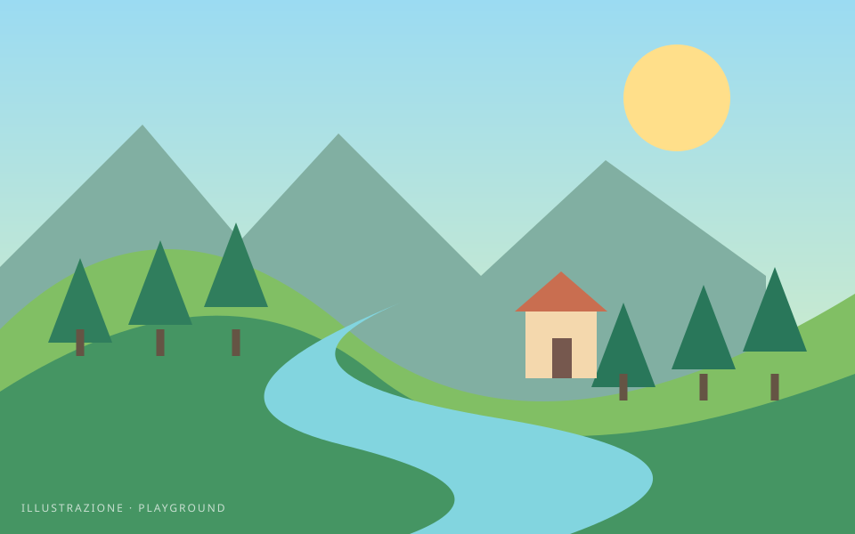
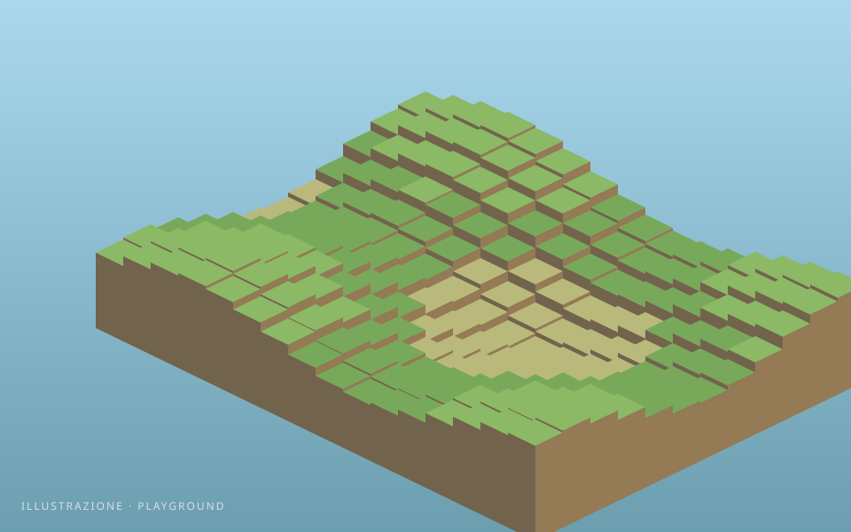

Mondi procedurali
Due modi di inventare un paesaggio. Scegli un esperimento e guarda cosa nasce.
Mouse e tastiera richiesti

Due modi di inventare un paesaggio. Scegli un esperimento e guarda cosa nasce.
Mouse e tastiera richiesti

